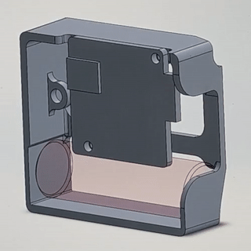
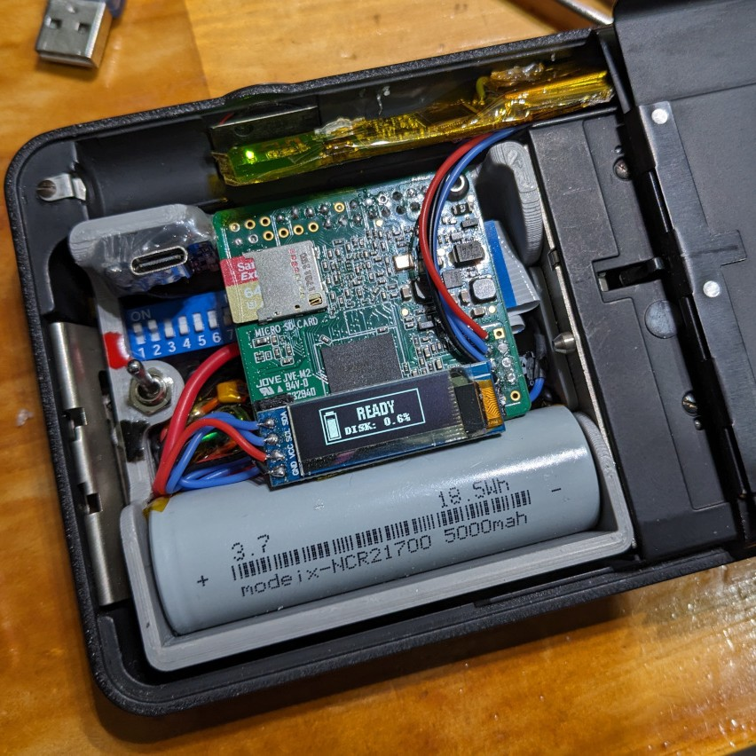
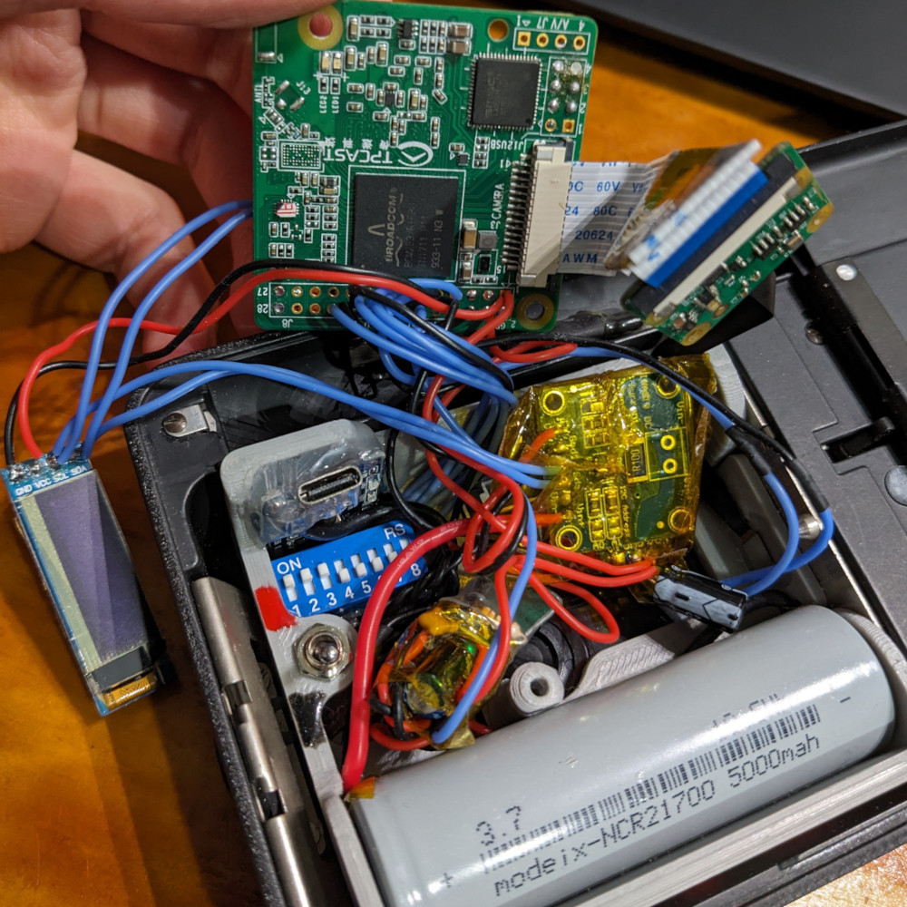
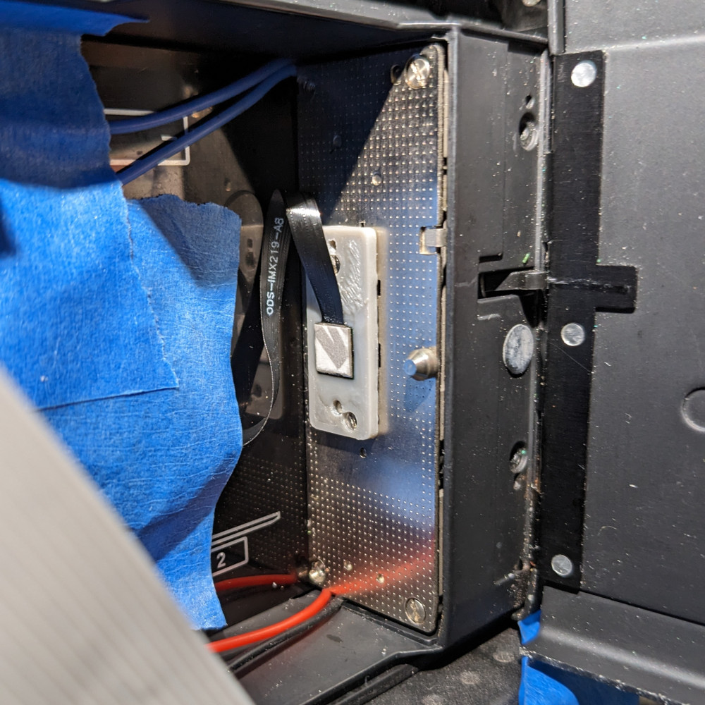
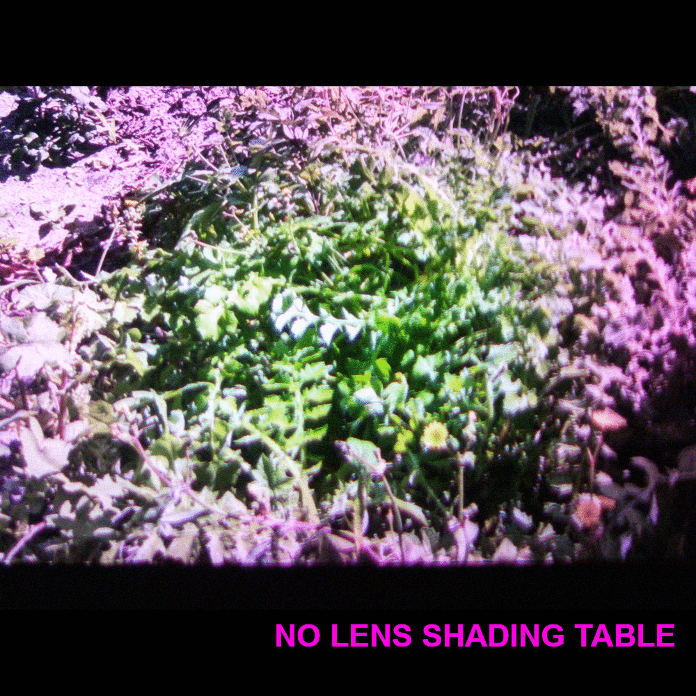
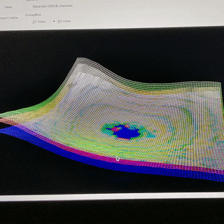

Project Cinemera
The Microflex 200 is a compact lightweight movie camera built in the 1970s in Germany by Agfa.
It takes super-8 format film cartridges, and was a great entry point into videography for amateur filmmakers.
At the time of this writing however, super-8 film is $60 per 15 m cartridge, with an additional $50 for development and $90 for scanning.
All up, a total cost of $200 for a bit over 3 minutes of film at the standard 18 FPS.
I am fortunate to have one in my possession, but was seeking a more affordable alternative to make use of this lens and camera form factor.
To that end, I designed digital cartridge for it, one that could serve as a replacement for film & development.
I wanted it to be distinct from just any other digital camera though- I wanted to preserve the original vintage appearance and feel of this camera; the click of the shutter button, the whirring of the tape drive motor, and the clicking of the shutter gate.
I wanted the videos produced to closely resemble the original film footage it would've captured. Fortunately the super-8 film format is not known for high definition clarity or fidelity, so this shouldn't be a high bar to meet.


The heart of this contraption is an unofficial "Raspberry Pi 3B Mini" board, essentially a Raspberry Pi 3B in a smaller form factor. This is coupled with an 8MP IMX219 image sensor (used in the "Raspberry Pi Camera Module 2") attached to the film gate, WiFi module for offloading data, OLED screen for status monitoring, and the necessary power management and charging modules to manage the 21700 battery and provide stable voltage rails for the electronics and film drive motor (purely for ambience).
The device could take still photographs with a double click of the original shutter button, or videos while the shutter button is held down. Following raw video capture, a processed video is encoded emulating the original super-8 film look, complete with sprocket hole, vertical jitter, and film grain. Images and videos were stored on the SD card, on a separate partition to the read-only root partition of the SD card containing the source code and Armbian OS. These could be downloaded via WiFi, as the raspberry pi could either broadcast a WiFi hotspot or connect to an existing access point.


For what started as a simple idea, the actual implementation was rife with unexpected setbacks and technical difficulties. To name a few:
- Overheating of the ARM processor in hot ambient weather, as there is very little room for any cooling system. This was alleviated with small heatsinks plus copper tape to wick heat away from the processor.
- Also due to the space constraints, EMI from the tape drive motor would cause artifacts to appear in the video recording. This was resolved with better wire routing, noise filtering on the voltage rails, and shielded cable.
- The 1 GB RAM of the Raspberry Pi severely limited video encoding options. I was unable to use h265 or even h264, and had to settle for MP4V.
- A mismatch between the chief ray angle of the super-8 camera's lens and the intended lens for the IMX219 would lead to vignetting and colour crosstalk (distortion). This led me down a rabbit hole of flat-field/colour correction and calibrating lens shading tables to reduce the severity of this. Below is a comparison showing the effect of the lens shading table, and a visualisation of the lens shading table generated to correct this.


After working through all the issues however, I was rewarded with a capable camera platform that could capture and output videos like this: